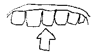

I y'ià chiq temps qué jé rencontrîmes l'oncl'ye Josué - yiavait unn' fameuse volèe qué j'n'avions veu lé bouan houmme par les c'mins, et jé n'savions pon chein qu'en 'tait dev'nu. I sembliait aver la goule un mio d'travers et quand tchiq's'uns en firent la r'merque lé v'chin la scène qui nos conti:
Ou savez bein, bouannes gens, qu'i yià pus d'sièz mais qué ma femmne, à la fin, hériti dé sa tante Mallé. Coumme la bouannefemme avait tréjous ag'nè et ag'nè sans jamais despenser grand chose - et ou passait les nonante quand oulle est morte - Nancy à ma grande jouaie, s'est trouvée en raide bouans moyiens. - Là-d'sus jé nos décidîmes de tchitter not' coummerce, dé prendre un p'tit louage à not' goût, et d'vivre trantchill'ment dé nos rentes pour lé restant dé nos jours. Jé trouvîmes la plièche qui nos fallait, mais dévant être settlès y'ien eût du tintamarre! Nancy voulait meûblier ov du bé et du bon - les vans v'naient et s'en r'allaient - j'étais bouschulè dé bord et d'autre par l's ouvriers, pas seul'ment un p'tit r'acoin pour y fumer unn' pipèe dé p'tun en r'pos.
Enfin j'endurais tout et né disais mot, Nancy avait bein lé droit de faire chein qu'ou voulait ov ses sous! tout coumme je comptais sus unn' pétite rèscompense quand tout s'rait fini. Unn' rèscompense, hélas, mes ammins, c'ha pustôt 'tè un d'sastre pour mé !
Ou viyiz, y'ià dèsjà bein longtemps qué j'ai perdu toutes mes dents, et jé vos gage qu'i m'ont bein tormentè la vie dévant s'en aller - eh bien, ma grande ambition était, quand j'en verrais ma chance, dé m'achater un chippé de fausses dents. Quand jé viyais les autres gens grugi des pommes ou du céléri, èspinotchi des os d'volaille, mangi des codrettes, des almandes, et du raîsin, ov un tas d'aûtres choses et qué pour mé i fallait m'en passer, v'là tchi mé faîsait aver unn' envie hôrrible dé pouver faire coumme yieux. Lé temps s'passait, et je r'étions un mio sièz nous, mais j'appréhendais toujours d'en pâsler à ma femme, car quoiqu'ou sait dé raide bouan tcheu ou n'manque pon d'être un mio moqueuse. Enfin unn' bouanne sairère je ristchi l'affaire. J'étions assis oprès du feu et Nancy était à rempièter unn' cauche, et de surprinse ou mantchi dé perdre unn' adguillie dé points... " Té," coumme ou m'fît, "aver dé neuves dents! Mais sais-tu bein qué v'là tchi couôte chi?" - "Vaire," qué j'respounni, pas trop à mé n'aîse, "mais je pensais p't'être qu'ach'teu;... ach'teu..." - "Dé neuves dents!" qu'ou sê r'fît, "et a tè n'âge... eh, man pouôre hoummé mais tu n'en verrais pas l'but!" - Jé ch'menchi à penser qué man biaû projet était fichu... " Mais,' s'fît alle en r'prenant sa caûche, "si tu voulais être raîsonnable, et té contenter ov un chippè dé s'conde main et à bouan marchi, j'en ai veu dans des boutiques en ville, et jé crai qué tu 'en trouv'rais yieun parmi chès là ov tchi tu pouôrrais té grais. - Erpenses-y." - Et l'affaire en resté là.
Jé rumini sus la chose pour deusse trais jours, mais l'envie mé r'print, et enfin jé m'dis : "Faût mus, p't'être bein, en aver dé s'conde main pustôt qué d's'en passer," et don je l'dît à ma femme: l'yi, ou m'ramassi des sous, et je fili en ville pour faire mé n'achat... Arrivè là-bas, jé vit un bel assortîment dé fausses dents êtalè à la f'nêtre d'unn' boutique dans yieunne des rues d'drière. J'entri et, oprès aver dit à unn' belle janne fille qu'était drière lé compteux chein qué j'voulais, ou s'en fut cherchi le marchand, mais i m'sembliait qué la hardelle r'tounnait... I vint tout d'un coup, et mé d'mandi bein poliment de m'assière, et quand-i qué la janne garse mé t'nait la tête, i c'menchi à m'fouôrrer des set dé dents dans la bouôche que jé t'nais ouèrte tout temps - oprès m'aver tintamarré les genchives et les mâchoires, i l'en trouvit un set qu'i mé dit tchi m'allaient à perfection, et pour ma satisfaction i m'fît ouvri et frumer ma bouôche ov chounna coulé tight dédans, et pis la hardelle mé laissi couôrre la tête. Oprès l'aver payi i m'dît qué les dents mé veng'raient pour un jour ou deux quand-i qu'i prendraient lus plié, mais surtout dé né pas mé pressi dé d'vîser à persounne en m'en r'allant sièz-mé.
Jé m'faûfilli don par les rues d'travers pour né pas rencontrer dé counnaisances, mais lé malheur en voulit qu'en touônant un carrefour qué jé vint fâche à fâche ov yieun dé nos ministres tchi visitait, dans chès parages là. Mé, tchi n'savais pon que la hardelle en mé t'nant la tête m'avait envié man chapé tout dé travers, et qué l'autre en m'fouôrrant les dents dans l'gôsi m'avait achiffounè ma dgêne et dèsrangi man neck-tie, je fut surprins de l'vais m'ergarder d'unn' drôle de faichon:
- "Ah, l'ami Josué," qu'i m'dît, "qué faites vous donc par ici?" - J'oubliyi l'avis qué l'marchand m'avait dounnè... "Gu...gu...gur, g... g...gui..g...g...geu..." qué j'c'menchi... I m'lanchi un r'gard d'hôrreur, l'vit les bras coumme en m'sespè, et filit coumme unn' balle. "Ch'est l'effêt d'mes dents," qué j'pensit, "et i crait que j'sis souls!" - Lé gït m'print et jé fis un grand effort pour rire... voire, et v'là justément coumme man d'sastre c'menchi... en bouffant jé dèsrangi tout lé chippé de dents: i s'en fut tout d'travers, coin sus cârre, et presque avaût lé gôsi.. et j'avais biaû êprouver à les r'arrangi ov mes daigts, mais j'n'y pouvais rein!
Justément dans lé temps v'là t'i pon que yieun d'm's'ammins dé la ville vint à passer. En m'viyiant i châtchi d'la tête tristrément. "Oh, Mait' Jos, Mait' Jos!" s'fît-i. J'en vint tout mârri. - "C... c... c... ola... c.. c... clé.." qué j'èsprouvi à l'y dire en pointant à ma bouôche. "Voire, voire, jé l'sait bein," qui m'dît, "mais i n'faut pas qué persounne ne vos vaient dans ch'et état là, faût vos en aller sièz vous." Et coumme par chance qu'un taxi passait dans l'temps, i hâli l'chauffeur et l'y dît deux mots en mé montrant. "Pour ouèche cachi, à l'Asile ou à la Station?" qu'i d'mandi quand i m'eûrent embertchi d'dans touos les deux, et, jé vos l'asseûre qué j'lus dounni bein dé l'embarras, car jé mé r'binfrais d'unn' belle fashion. Mais jé l'entendit, l'y dounner mé adresse, lé payiant d'avanche, en l'y dîsant dé cachi rond'ment et dé ne dire mot ès cheins dé la maison. En effet l'individu ne fut pon longtemps devant arriver sièz nous - j'érais bein voulu aver tappè d'sus, mais i m'êchouit bein vite à ma porte, sounnit la clioche et filit ov sé'n engin.
Quand Nancy mé vit entrer tout en colère et dans un pareil êtat, quand ou m'entendit faire des d'vis qu'ou né comprénait pas, ou' l'en eût unn' attaque dé ner's et en cryiant: "Oh, Josué, est-i pôssible, hélas!" ou s'laîssi tchais dons sa grand' tchaise, et mântchit d'achouîmir sa catte qui yiètait bein arrounnèe.
V'là tchi m'fît affoler - jé m'en fut dans la tchuisinne cherchi l'ardaise qu'ou garde pendue drière la porte pour ses comptes dé maison, et j'èscrivit d'sus: "Jè n'sis pon en bouaisson, ch'est mes fichues dents!" - et jé y'i'apporti unn' parre dé pinchettes, un chisé à fraid et un marté, et j'l'i dît dé faire dé san mus pour mé haller chutte salop'rie là hors dé ma bouôche... Ch'est, qu'ou l'y travaillyi bein du, ma pouôre femme, mais à forche dé calfêter, dé capuchi, et dé haller, oull' en r'pari, mais pas sans peinne. Et jé n'sis pon tenté d'y r'èsprouver!
J. P.
1919.
Viyiz étout: